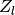
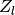

skrf.tlineFunctions.zl_2_Gamma0¶
- skrf.tlineFunctions.zl_2_Gamma0(z0, zl)¶
Returns the reflection coefficient for a given load impedance, and characteristic impedance.
For a transmission line of characteristic impedance
 terminated with load impedance , the complex reflection
coefficient is given by,
terminated with load impedance , the complex reflection
coefficient is given by,Parameters : z0 : number or array-like
characteristic impedance
zl : number or array-like
load impedance (aka input impedance)
Returns : gamma : number or array-like
reflection coefficient
See also
- Gamma0_2_zl
- reflection coefficient to load impedance
Notes
inputs are typecasted to 1D complex array